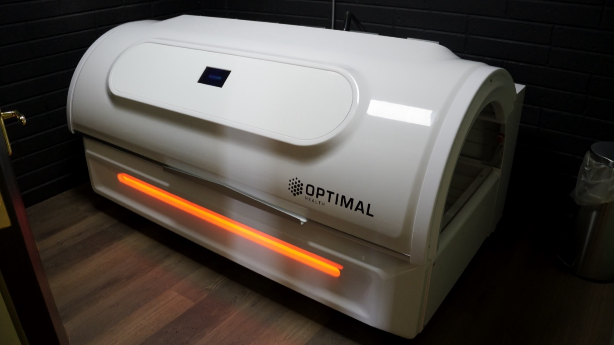
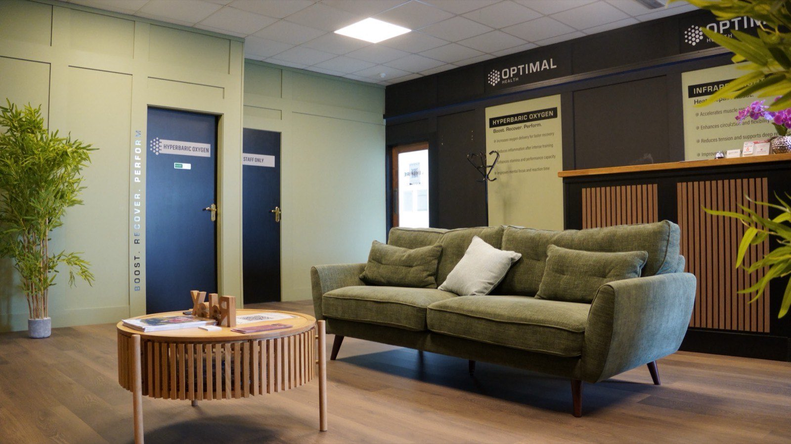

01
Someone shows you in and gets the bed ready for you.

Therapy
Deep, gentle warmth. You lie down, the bed does the rest, and most people find it the easiest thirty minutes of their week.
What it is
Infrared helps muscles release tension and joints loosen. Beyond recovery, people tell us it supports better sleep, calmer evenings and smoother mornings — the kind of thing that ripples through the rest of the week.
It is a simple reset for anyone who wants to move easier and feel more balanced day to day.

What it supports
Practicalities
01
Someone shows you in and gets the bed ready for you.
02
You lie down. The warmth builds gradually rather than all at once.
03
Most people close their eyes. Some fall asleep, which is fine.
04
You get up, have a glass of water, and carry on with your day.
Getting started
A single session is the easiest way to know whether it suits you. No obligation to book a block afterwards.